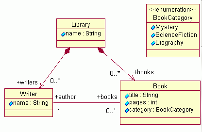

This tutorial is a follow-on to the tutorial "Generating an EMF Model" in which a simple "library" model is generated. In that tutorial, we showed how an EMF model can be generated very easily from a Rose model or a set of Java interface files. In this tutorial, we will show you how an extended EMF model, one that extends an existing model, can be generated.
First of all, let us review what the "library" model contains:

We are now going to extend this "library" model by creating a new package
called "schoollibrary". The "schoollibrary" package contains three classes,
two of which extend classes in the "library" model:
This tutorial will show you step-by-step how to generate an EMF model of this "schoollibrary" package using the existing "library" model. As in the previous tutorial, we will demonstrate creating this new model from a Rose model and from a set of Java interfaces.
The screenshots in this tutorial were captured using version 2.1 of the Eclipse SDK and version 1.1.0 (build 20030501_0612VL) of EMF.
| Step 0: | Prerequisites |
| Step 1: | Creating a New EMF Model Project from a Rose Model or Java Interfaces |
| Step 2: | Generating the EMF Model and the Editor |
| Step 3: | Running the Generated Editor |
| Step 4: |
Modifying the Editor |
| Appendix: |
An Alternative Way of Generating the Model and Editor |